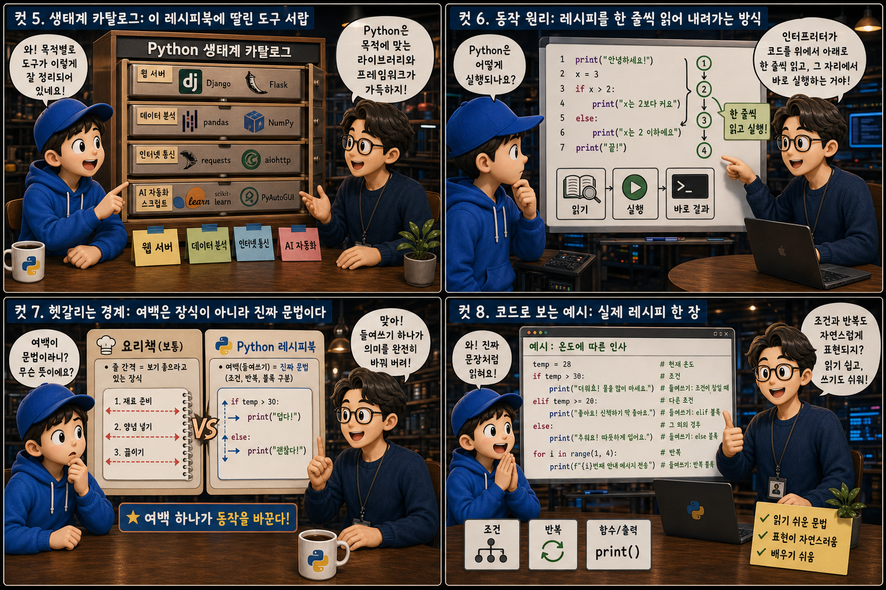
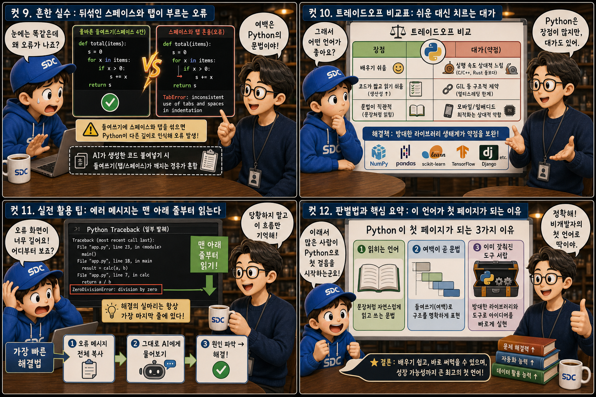

‘누구나 읽을 수 있는 요리책’에 비유해, 처음 코딩을 배우는 사람과 AI와 함께 ‘바이브 코딩’을 시작하는 사람 모두 왜 Python부터 펼치는지 12컷으로 풀어봅니다.
PythonvsOther Languages
처음 마주하는 프로그래밍 언어치고, Python만큼 자주 첫 페이지로 추천받는 언어는 드뭅니다. 이 글에서는 그 이유를 ‘누구나 읽을 수 있는 요리책’ 하나에 비유해 살펴봅니다. 서가에 꽂힌 여러 언어 책 중 유독 파란 표지의 책 한 권만 문장처럼 자연스럽게 읽히는 조리법을 담고 있고, 그 안의 노란 리본은 쉬움과 강조를 상징합니다. 처음 코딩을 배우는 사람도, AI와 함께 ‘바이브 코딩’을 시작하는 사람도 거의 예외 없이 이 책부터 펼치게 되는 이유를 12컷으로 하나씩 따라가 보겠습니다.
PART 1 / 3 — 유독 한 권만 다른 이유 (컷 01–04)
fourcut-01 — 컷 01 ~ 04
컷 01
다들 왜 이 책부터 펼치라고 할까
처음 코딩을 배우는 사람도, AI와 함께 ‘바이브 코딩’을 시작하는 사람도 거의 예외 없이 Python부터 권유받는다.
책장 가득 꽂힌 프로그래밍 언어 요리책들. 대부분은 표지가 어둡고 복잡한 기호와 중괄호 문양으로 뒤덮여 있는데, 그중 한 권만 표지가 선명한 블루이고 중앙에 노란 리본 책갈피가 꽂혀 있습니다. 표지에는 실뭉치처럼 서로 감싸는 두 마리 뱀 로고가 새겨져 있고, 초보 요리사 한 명이 그 책을 향해 손을 뻗습니다. 이 책이 유난히 눈에 띄는 이유는 단순합니다 — 이 시리즈는 왜 비개발자와 AI 초보 개발자 모두가 Python을 첫 언어로 추천받는지, 그 이유를 열두 장면으로 풀어봅니다.
컷 02
정의부터 명확히: 사람이 읽는 순서로 적힌 레시피
Python은 문법이 영어 문장의 어순에 가깝고, 코드 블록을 중괄호가 아닌 들여쓰기로 표현하는 언어다.
Python은 if, for, print처럼 영어 단어를 거의 그대로 사용하고, 문장 구조도 사람이 읽는 순서와 비슷하게 설계되어 있습니다. 다른 언어들이 중괄호 { }로 코드 블록의 시작과 끝을 표시하는 것과 달리, Python은 줄 앞의 여백 — 즉 들여쓰기(indentation) 자체가 ‘이 줄은 위 문장에 속한다’는 문법적 의미를 가집니다. 레시피북에서 한 단계 아래 세부 조리법이 살짝 들여써져 있듯, Python 코드도 들여쓰기만 보면 어떤 코드가 어디에 속하는지 눈으로 바로 알 수 있습니다.
컷 03
나란히 비교: 여백으로 적힌 레시피와 클립으로 묶은 메모
같은 로직도 Python은 들여쓰기만으로 간결하게 표현하는 반면, JavaScript는 중괄호로 블록의 시작과 끝을 일일이 표시해야 한다.
Python에서는 들여쓰기 자체가 문법이기 때문에 if 온도 > 100: 다음 줄을 한 칸 들여쓰기만 해도 ‘이 코드는 조건이 참일 때 실행된다’는 뜻이 정확히 전달됩니다. JavaScript 같은 언어는 같은 로직을 표현할 때 중괄호 { }로 블록의 시작과 끝을 직접 표시해야 하고, 세미콜론(;)으로 문장이 끝났음을 알려야 합니다 — if (온도 > 100) { 면을 넣는다; }처럼요. 결과적으로 Python 코드는 불필요한 기호가 줄어들어, 같은 로직이라도 더 짧고 눈에 들어오는 문장처럼 읽힙니다.
컷 04
한 문장으로 정리하면
Python은 사람이 읽기 쉬운 문법과 강력한 라이브러리 생태계를 함께 갖춘 범용 프로그래밍 언어다.
READABLE SYNTAX
사람이 읽기 쉬운 문법
LIBRARY ECOSYSTEM
이미 갖춰진 도구 생태계
definition
이 한 문장만 기억해도 왜 이 언어가 초보자의 첫걸음이자 동시에 데이터 분석가, AI 연구자, 자동화 스크립트 작성자 모두의 도구로 쓰이는지 이해할 수 있습니다. 쉽게 배우면서도 실전에서 부족함이 없다는 조합이 Python을 특별하게 만듭니다.
PART 2 / 3 — 도구와 동작 원리 (컷 05–08)

fourcut-02 — 컷 05 ~ 08
컷 05
생태계 카탈로그: 이 레시피북에 딸린 도구 서랍
Python은 웹 서버, 데이터 분석, 인터넷 통신, AI 자동화 스크립트까지 목적별로 잘 만들어진 라이브러리와 프레임워크를 갖추고 있다.
Python이 널리 쓰이는 이유 중 하나는 이미 검증된 도구가 목적별로 갖춰져 있다는 점입니다. 웹 서비스를 만들 때는 FastAPI나 Django를, 표 형태의 데이터를 다룰 때는 pandas를, 다른 서버에 정보를 요청할 때는 requests를 가져다 쓰면 됩니다. 여기에 더해 반복 작업을 자동화하거나 AI 모델을 다루는 스크립트 대부분이 Python으로 작성되어 있어서, 재료 손질용 칼과 계량컵이 이미 서랍에 갖춰진 부엌처럼 처음부터 다시 만들 필요 없이 필요한 도구를 꺼내 쓰기만 하면 됩니다.
컷 06
동작 원리: 레시피를 한 줄씩 읽어 내려가는 방식
Python은 인터프리터가 코드를 위에서 아래로 한 줄씩 읽고 그 자리에서 바로 실행하는 방식으로 동작한다.
1행 · 온도 = 105→2행 · if 온도 > 100:→3행 · print(면을 넣는다)→4행 · print(조리가 끝났습니다)
Python 코드를 실행하면 인터프리터라는 프로그램이 파일의 맨 위 줄부터 한 줄씩 순서대로 읽고, 그 줄의 뜻을 바로 해석해서 실행합니다. 마치 요리사가 레시피북을 처음부터 끝까지 읽어 내려가며 한 단계씩 그 자리에서 조리하는 것과 같습니다. 이 방식 덕분에 별도의 복잡한 사전 변환 과정 없이 코드를 저장하자마자 곧바로 실행해 결과를 확인할 수 있어서, 처음 배우는 사람도 ‘써보고 바로 눈으로 확인하는’ 경험을 빠르게 반복할 수 있습니다.
컷 07
헷갈리는 경계: 여백은 장식이 아니라 진짜 문법이다
보통의 언어에서 줄 간격은 그저 보기 좋으라고 있는 장식이지만, Python에서는 그 여백 자체가 어떤 단계가 어떤 조건에 속하는지를 결정하는 진짜 문법이다.
많은 프로그래밍 언어에서는 코드의 줄 간격이나 들여쓰기가 그저 보기 좋으라고 넣는 습관일 뿐, 실행 결과에는 아무 영향을 주지 않습니다. 하지만 Python은 다릅니다. 들여쓰기 자체가 ‘이 문장이 위 조건문이나 반복문에 속하는지’를 결정하는 진짜 문법 요소입니다. 그래서 같은 내용이라도 들여쓰기 위치가 한 칸만 어긋나면 프로그램의 동작 자체가 달라지거나 아예 오류가 나기도 합니다. indentation is not decoration, it is syntax — 이 특징은 코드를 읽기 쉽게 만들어주는 장점이자, 동시에 초보자가 가장 많이 부딪히는 경계이기도 합니다.
컷 08
코드로 보는 예시: 실제 레시피 한 장
코드 — 조건과 실행
온도 = 105
if 온도 > 100:
print("면을 넣는다")
print("조리가 끝났습니다") # 조건과 무관하게 항상 실행
실행 결과 — 터미널 출력
$ python cook.py
면을 넣는다
조리가 끝났습니다
위 코드는 온도가 100보다 크면 ‘면을 넣는다’를 출력하고, 그 뒤에는 항상 ‘조리가 끝났습니다’를 출력합니다. if 온도 > 100: 다음 줄이 들여써져 있기 때문에 그 줄만 조건이 참일 때 실행되고, 들여쓰기가 없는 마지막 줄은 조건과 상관없이 항상 실행됩니다. 문장을 그대로 소리 내어 읽어도 뜻이 통할 만큼 자연스러운 구조여서, AI가 만들어 준 코드를 눈으로 훑어봐도 대략 무슨 일을 하는지 짐작할 수 있습니다.
PART 3 / 3 — 실전 감각과 요약 (컷 09–12)

fourcut-03 — 컷 09 ~ 12
컷 09
흔한 실수: 뒤섞인 스페이스와 탭이 부르는 오류
⚠ IndentationError: 스페이스와 탭 혼용
Python에서 가장 흔한 초보자의 실수는 들여쓰기에 스페이스와 탭을 섞어 쓰는 것입니다. 화면에는 똑같이 맞춰진 것처럼 보여도 컴퓨터 입장에서는 서로 다른 폭으로 인식되어 IndentationError라는 오류가 발생합니다. 특히 AI가 생성해 준 코드를 코드 편집기가 아닌 다른 곳(채팅창, 메모장 등)에 복사했다가 붙여넣으면 들여쓰기 간격이 예상과 다르게 깨지는 경우가 많습니다.
✓ 탭을 스페이스로 표시해 눈으로 확인하기
이런 오류가 나면 먼저 편집기의 ‘탭을 스페이스로 표시’ 설정을 켜서, 눈에 보이지 않던 여백의 차이를 직접 확인하는 것이 좋습니다.
겉보기엔 똑같이 맞춰진 두 줄이라도, 한 줄은 스페이스 네 칸으로 다른 한 줄은 탭 한 번으로 들여써져 있다면 Python은 이 둘을 다른 깊이로 인식합니다. 눈에는 안 보이는 여백의 함정이 바로 여기 있습니다.
컷 10
트레이드오프 비교표: 쉬운 대신 치르는 대가
easy to write, slower to run
비교 축
Python
다른 언어
학습 난이도
쉬움
보통 ~ 어려움
코드 길이
짧다
상대적으로 길다
실행 속도
상대적으로 느리다
상대적으로 빠르다
속도 보완 수단
pandas · NumPy 등 최적화 라이브러리
언어 자체의 컴파일 최적화
Python은 문법이 간결하고 사람이 읽기 쉬워서 같은 기능을 다른 언어보다 훨씬 짧은 코드로 완성할 수 있습니다. 다만 이런 편의성 뒤에는 대가가 있는데, 코드를 한 줄씩 해석하며 실행하는 방식이다 보니 미리 기계어로 변환해 두는 언어들보다 실행 속도가 상대적으로 느립니다. 그러나 실제로 속도가 중요한 부분은 pandas, NumPy처럼 내부적으로 빠른 언어로 최적화된 라이브러리를 가져다 쓰는 경우가 많아서, 이 약점은 생태계의 도움으로 상당 부분 상쇄됩니다.
컷 11
실전 활용 팁: 에러 메시지는 맨 아래 줄부터 읽는다
🔍 Traceback, 어디부터 읽을까
맨 아래 줄부터 확인
오류 종류(Error) 이름 확인
위쪽 복잡한 경로는 무시해도 된다
🔍 막히면 AI에게 통째로
에러 메시지 전체 복사
요약하지 말고 그대로 붙여넣기
파일명 · 줄 번호까지 포함해서 질문
Python 코드가 오류를 내면 화면 가득 낯선 경로와 줄 번호가 쏟아져 당황하기 쉽지만, 사실 진짜 원인은 대부분 Traceback의 맨 마지막 줄에 적혀 있습니다. 그 줄에는 어떤 종류의 오류인지와 무엇이 잘못됐는지가 요약되어 있으므로, 위쪽의 복잡한 경로는 무시하고 맨 아래부터 읽는 습관을 들이는 것이 좋습니다. 그리고 스스로 해석이 어렵다면 그 메시지 전체를 요약하지 말고 그대로 복사해서 AI에게 물어보십시오. Traceback 전체에는 오류가 발생한 파일, 줄 번호, 코드 맥락이 모두 담겨 있어서, 전체를 붙여넣을수록 AI가 훨씬 정확하게 원인을 짚어 줄 수 있습니다.
컷 12
판별법과 핵심 요약: 이 언어가 첫 페이지가 되는 이유
문장처럼 읽히는 문법, 여백이 곧 문법이 되는 구조, 그리고 이미 갖춰진 방대한 도구 서랍이 합쳐져 Python을 비개발자의 첫 언어로 만든다.
가장 간단한 판별법은 이것입니다. 어떤 코드를 소리 내어 읽었을 때 대략 무슨 뜻인지 짐작이 간다면, 그것이 바로 Python이 지향하는 방향입니다. 문장처럼 읽히는 문법, 여백 하나에도 의미를 담는 들여쓰기, 그리고 웹부터 데이터 분석과 AI 자동화까지 이미 갖춰진 방대한 도구 서랍, 이 세 가지가 합쳐져 비개발자와 AI 초보 개발자 모두에게 첫 번째 언어로 선택받는 이유가 됩니다. 완벽하게 빠른 언어는 아니지만, ‘이해하고 바로 써먹을 수 있다’는 점에서 Python은 여전히 가장 친절한 첫 페이지로 남아 있습니다.
문법이 문장처럼 읽힌다들여쓰기가 곧 문법이다생태계가 넓다속도보다 쉬움을 택한다에러는 아래부터 읽는다판별법: 읽어서 뜻이 통하면 Python
한 권의 레시피북, 첫 페이지가 되는 이유
Python은 문장처럼 읽히는 문법과 여백 하나에도 의미를 담는 들여쓰기, 그리고 이미 갖춰진 방대한 도구 서랍으로 첫걸음을 가볍게 만듭니다. 완벽하게 빠른 언어는 아니지만, 읽으면 뜻이 통하는 언어라는 점에서 여전히 가장 친절한 첫 페이지로 남아 있습니다.